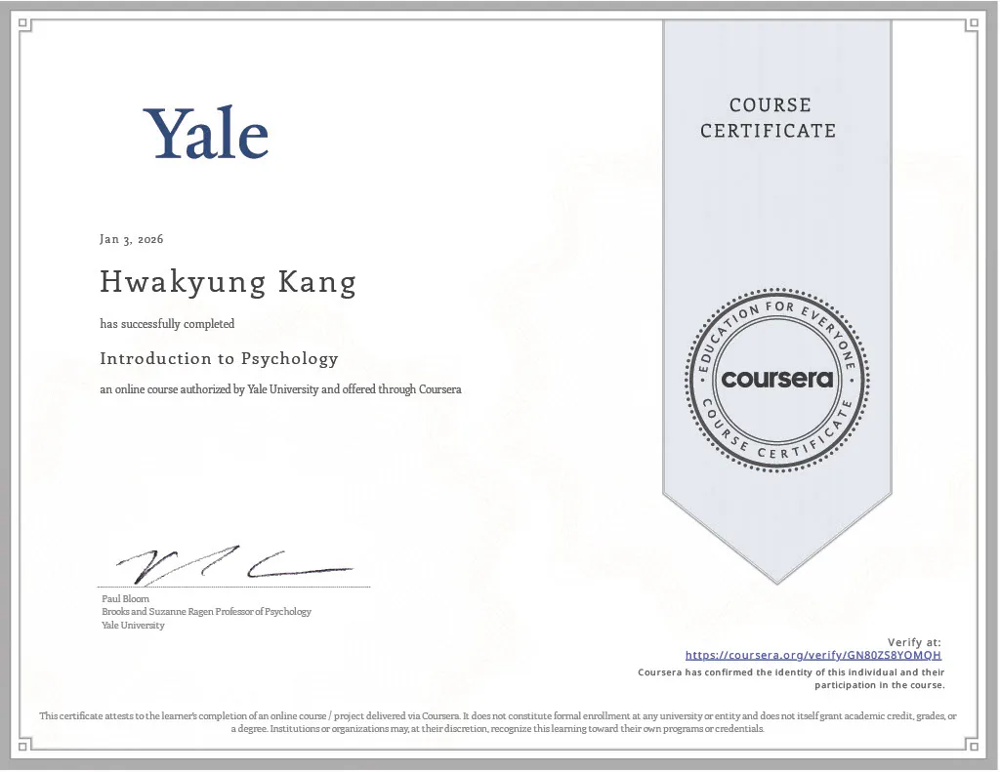
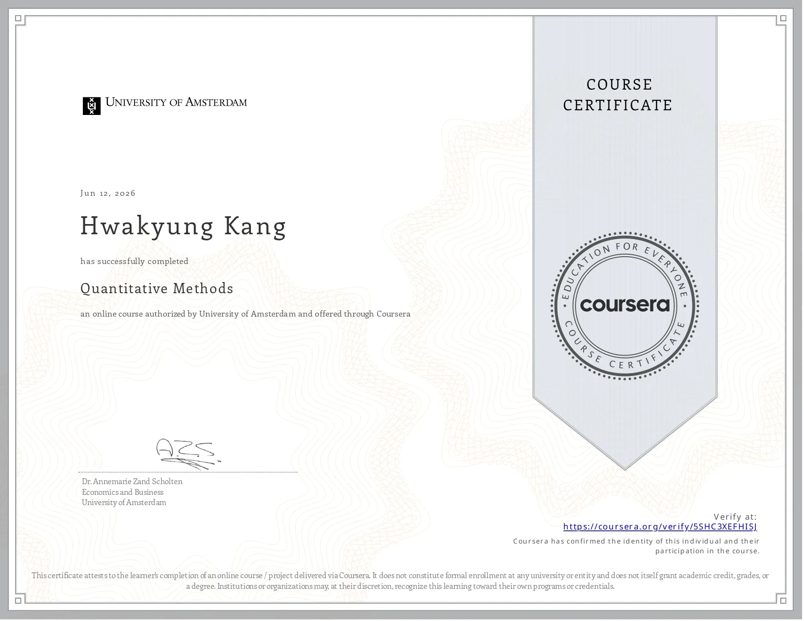

Independent learning
Courses that helped me begin studying psychology, research methods, and cognitive science outside my regular school classes.
1. Introduction to Psychology
In January 2026, I took an online Introduction to Psychology course taught by Paul Bloom because I wanted a broader foundation in psychology. The course introduced many areas, including development, language, perception, memory, emotion, evolution, and social psychology.
While taking the course, I wrote notes about the main ideas, but I also wrote down questions that came to me. The questions about language stayed with me the longest. I noticed that I sometimes felt more outgoing when speaking English, quieter when speaking standard Korean, and more active when using my family’s regional dialect. I did not think that each language created one fixed personality. However, I began to wonder whether a language could carry social customs and ways of seeing that had developed through its history.
I also asked whether the shape of a writing system could affect how quickly the brain processed a word. I did not yet know how to turn this into an experiment, but the question stayed with me as I continued learning about language and cognition.
The lessons about perception, attention, and memory also influenced my later work. I learned that perception includes unconscious guesses about the world, that attention leaves out more information than we notice, and that memory does not always give us a complete record of the past. The Stroop effect was especially interesting because it showed an automatic mental process through a short activity that a person could try. I later returned to ideas about attention while making the four Practice activities for my Global Mindfulness Hub.
At the time, many of my questions were broad, and I did not know how to test them. This course did not give me one research topic, but it helped me move from a general interest in the mind toward more specific questions about language, perception, and memory.

Selected notes and questions
These are selected notes and questions that I wrote while taking the course.
Language and identity
I wondered how speaking more than one language might affect a person’s thinking and sense of identity. In my own experience, I sometimes feel more outgoing when I speak English. When I speak standard Korean, I tend to be quieter. When I use my family’s southeastern Korean dialect, I become more active again.
At the time, I tried to explain these differences through the histories and social customs connected to each language. Later, I realized that this explanation was too broad. A language does not create one fixed personality, and people who speak the same language do not all think in the same way. However, I remained interested in how language, culture, situation, and personal experience might work together.
Questions I wrote:
- How does speaking more than one language affect the way a person expresses the self?
- Does a different language change a person’s personality, or does it allow a different part of the same person to appear?
- How do the feelings and expressions found in different languages and literatures affect the way people understand an experience?
Writing systems and word processing
While studying language and memory, I began wondering whether the visual form of a word could affect how it was processed.
Questions I wrote:
- Does the shape of a written character affect how quickly the brain processes a word?
- Do Korean, Chinese, and English words lead people to process the same meaning differently?
- Can a writing system affect how a person understands a social or personal problem?
At that time, I did not know how to test these questions.
Perception, attention, and memory
I learned that perception is not a direct copy of the world. The brain uses information from the senses together with assumptions that the brain makes without our awareness. Attention also selects only part of what is around us, so we can miss more than we expect.
I also learned that memory includes encoding, storage, and retrieval. Memory is affected by attention, organization, meaning, and retrieval cues. It does not always preserve a complete and accurate record of an experience.
The Stroop effect was one example of an automatic process. When the meaning of a color word and the color of its ink do not match, naming the ink color can take more time. I was interested in how such a short activity could make an invisible mental process easier to notice.
2. Quantitative Methods
In June 2026, I took Quantitative Methods on Coursera because I wanted to learn how psychological research was designed and evaluated. I already had questions that I wanted to study, but I did not yet know how to turn a question into a method that could produce useful evidence.
The course introduced the empirical cycle, variables, operationalization, validity, sampling, measurement, and research ethics. I learned that a study could produce numbers and still have a weak conclusion. A result could be affected by a confounding variable, an unclear measurement, a biased sample, or another explanation that the researcher had not considered.
In the course assignments, I practiced identifying independent and dependent variables, finding possible threats to validity, and thinking about how an abstract idea could be measured. I also examined the limits of studies that used narrow groups of participants. These assignments were difficult because I sometimes understood the definition of a term before I understood how to use it in a real study.
The lessons about sampling and generalization helped me think more carefully about my own research. In my Life of Pi audience review project, I used only reviews that directly stated a seating floor for the main seating comparison. I also understood that online reviewers could not represent everyone who watched the play. When I looked back at my earlier theater survey plan, I understood more clearly that voluntary participation alone was not enough. I also needed permission, informed consent, and a plan for protecting personal information.
I also learned to keep clear research records. Original data, changes made during processing, and analysis files should not be mixed together or silently replaced. This became important when I kept the original file of 1,389 Life of Pi reviews and made a separate cleaned file of 1,376 reviews for the main analysis.
I did not understand every research term fully when I first completed the course. The ideas became clearer when I later had to make my own decisions about participants, measurements, data, and conclusions.

Selected notes and assignments
These are selected ideas and assignments from the course.
The empirical cycle
I learned to think of research as a cycle:
- Observe a pattern or problem.
- Form a possible explanation.
- Make a prediction from that explanation.
- Collect data to test the prediction.
- Evaluate whether the result supports the explanation.
A result can support a hypothesis, but it does not prove that the hypothesis will always be true. Another study may find a different result, and another explanation may fit the same evidence.
Validity and other explanations
One of the most useful ideas for me was the difference between several kinds of validity. Construct validity asks whether a study actually measures the idea it claims to measure. Internal validity asks whether another factor could explain the result. External validity asks how far the result can be generalized beyond the people and setting in the study.
In one assignment, I examined a study that connected a person’s relationship with science to moral judgment. I questioned whether political beliefs, personal experiences, or other background differences might also affect the participants’ answers. I also noted that a group of university students could not represent people of every age and background.
In another assignment, I examined research about violent video games. The participants were young, right-handed university students who had little experience with video games. I thought this made it difficult to generalize the findings to children, older adults, or regular players. These exercises taught me to look for other possible explanations before accepting a conclusion.
Operationalization and measurement
A construct is an abstract idea, such as motivation, confidence, or memory. Operationalization is the decision about how that idea will be measured.
For one assignment, I tried to write questionnaire items about different reasons for joining a psychology course. I separated interest in psychology from external reasons such as grades or recognition. This showed me that even a simple question could be unclear or could lead a participant toward one answer.
I learned that survey questions should be short, understandable, and answerable. The response choices should also cover the possible answers without overlapping.
Sampling, ethics, and research records
I learned that a convenient sample is not the same as a random sample. If participants come from one school, age group, or online community, the result may not apply to a larger population. A researcher needs to explain this limit instead of making a claim about everyone.
I also studied voluntary participation, the right to stop, confidentiality, and protection from harm. These ideas later became important when I reconsidered my early theater surveys.
The course also taught me to keep the original data, document any changes, and save the steps used in an analysis. Research can become difficult to check if the original file and the processed file are mixed together.
Finally, I learned why a researcher should not change a hypothesis after seeing the results and then present it as the original hypothesis, search repeatedly for a favorable result, or report only the findings that support an expectation. These lessons helped me understand why an unexpected or non-significant result should not simply be removed.
3. UChicago Summer Session: Foundations of Psychological Research
In July 2026, I took Foundations of Psychological Research through the University of Chicago’s Summer Online Session. I had already studied introductory psychology and quantitative methods independently, but I wanted to learn how to develop a research question through class discussions and guided assignments.
At the beginning of the course, I considered questions about work, freedom, reading, technology, aging, and meaning in everyday life. Many of my first questions were too broad. I eventually focused on whether creating meaning from daily routines could influence a person’s self-esteem and resilience.
The question came partly from my interest in existentialism and my reading of Albert Camus. I wondered whether an idea that I had first approached through philosophy could be turned into a psychological question that could be studied. I then read published research about routines and meaning in life and examined the participants, methods, measurements, and conclusions.
Through the daily assignments, I considered several possible research designs. These included between-subjects, within-subjects, observational, correlational, and secondary-data designs. Comparing them helped me understand that the design changes both what a researcher can measure and what the results can show.
The course lasted from July 7 to July 23 and met for two hours every weekday. Because I joined from Korea, the live class ran from 11 p.m. to 1 a.m. for me. There were several research articles to read and daily assignments to complete, but adjusting to the time difference was the hardest part.
During the first two weeks, I developed my question, read published studies, and considered different research designs. Near the end of the second week, I wrote a short overview of my proposal. I then had only a few days to turn it into the final research proposal of two to three pages and a short presentation.
For the final assignment, I proposed a two-group experiment. One group would write short factual journals about daily events, while the other group would write about the meaning they found in those events. I planned to measure the participants’ self-esteem and resilience before and after the journal period. This was a research proposal and study design, not an experiment that I conducted.
It was my first complete research proposal. Unlike my longer research projects, which continued through testing and revision with guidance, this project ended at the design stage when the three-week course ended. If I continued it, I would need to think more carefully about participant recruitment, privacy, and the analysis of the results.
The course taught me that an interesting question is only the beginning of research. The participants, measurements, design, and analysis must all fit the question. It also showed me how a broad interest in philosophy could become a research question and a possible experiment.
Selected coursework
1. My first questions
At the beginning of the course, I wrote several possible research questions:
- Why do people today dedicate themselves so strongly to work even when they are not facing a direct physical threat?
- Does a person’s understanding of freedom change according to their social and economic background?
- Does using AI for learning affect how students think and learn?
- Does reading more books affect adolescents’ academic achievement?
- Does the ability to adapt to new technology change with age?
These questions reflected my interests, but most of them were too broad to become one short research proposal.
2. Narrowing the question
I became most interested in the question of meaning in everyday life. My first version was:
How do people who create meaning from everyday routines differ in self-esteem and resilience from people who do not?
I chose it because it connected psychology with my interest in existentialism. However, I still needed to decide what “creating meaning” meant and how self-esteem and resilience could be measured.
3. Reading earlier research
I read and summarized Routines and Meaning in Life by Samantha J. Heintzelman and Laura A. King. One of its studies asked participants about their activities and sense of meaning several times a day. The researchers found a positive relationship between following routines and experiencing meaning in life.
I also read Relationships Between Meaning in Life, Social and Achievement Events, and Positive and Negative Affect in Daily Life by Kaitlyn A. Machell and her coauthors. These articles helped me see how researchers could study an abstract idea such as meaning through repeated questions and numerical scales.
They also made me notice that my question was different. I was not only asking whether routines were related to meaning. I wanted to ask whether actively finding meaning in ordinary events could be connected to self-esteem and resilience.
4. Comparing possible designs
For each type of research design introduced in class, I considered how it might fit my question.
A correlational study could compare people’s tendency to find meaning in routines with their self-esteem and resilience. However, it could not show that meaning-making caused a change.
A within-subjects design could ask the same participants to try both factual and meaning-focused journals. I learned that I would need to change the order for some participants because completing one journal first could affect the second condition.
I finally chose a between-subjects design. I planned to divide participants into a fact-journal group and a meaning-journal group and compare changes in their self-esteem and resilience. This design was easier for me to explain within the short proposal, although it would still require more careful planning before it could become a real study.
5. Hypothesis
My final hypothesis was that writing about meaning in everyday routines would increase participants’ self-esteem and resilience more than writing only factual descriptions of the same kinds of events.
I planned to use self-esteem and resilience scales before and after the journal period. The final assignment asked me to explain this proposed design, the earlier research behind it, the data I would need, and how I would present the idea to a general audience.
Final Course Research Proposal
Below is a shortened portfolio version of the proposal I developed for the course.
A Proposed Study of Meaning-Making in Daily Routines, Self-Esteem, and Resilience
Research question and background
My proposed research question was: Does finding meaning in everyday routines affect a person’s self-esteem and resilience?
This question began with my interest in Albert Camus and existentialism. In The Myth of Sisyphus, Camus describes how a person can continue living and resisting even within an absurd world. I became interested in whether finding personal meaning in ordinary actions could be studied through psychology.
Earlier psychological research provided a more measurable background for my question. Machell and her coauthors studied relationships between daily events, meaning in life, and emotion. Heintzelman and King also examined the relationship between routines and meaning in life. These studies did not answer my exact question, but they showed me that routines and a sense of meaning could be studied using repeated reports and psychological scales.
I proposed testing whether meaning-focused journaling would lead to greater changes in self-esteem and resilience than writing only factual descriptions of daily events.
Proposed participants and design
I proposed recruiting 100 South Korean adults between the ages of 18 and 60. I planned to reach different age groups through online platforms commonly used by younger, middle-aged, and older adults.
This would not be a truly random sample of the entire South Korean population. It would be an online sample with age-group targets. Because of this, the results could not automatically be generalized to all South Korean adults.
After recruitment, participants would be randomly assigned to one of two groups:
- Fact-journal group: Participants would write three to five sentences describing factual events from their day.
- Meaning-journal group: Participants would write three to five sentences about the feelings, thoughts, or personal meaning they found in events from their day.
The journaling period would last for two weeks. The journaling condition would be the independent variable. Changes in self-esteem and resilience would be the dependent variables.
Proposed procedure and measurements
Before the journaling period, both groups would complete the Rosenberg Self-Esteem Scale and the Connor-Davidson Resilience Scale through a website. These would provide the pre-study measurements.
Participants would then complete their assigned journal once each day for two weeks. I also proposed sending reminders to participants who missed an entry. If the study were actually conducted, this reminder system and any contact information would require clear consent and careful privacy protection.
After two weeks, all participants would complete the same self-esteem and resilience scales again. I would then compare the changes between the two groups.
Hypothesis and proposed analysis
My alternative hypothesis was that participants in the meaning-journal group would show a greater increase in self-esteem and resilience than participants in the fact-journal group.
My null hypothesis was that the two groups would not differ in their changes in self-esteem or resilience.
In my original proposal, I planned to compare the pre-study and post-study scores by looking at the mean and median values for each group. If I developed the study further, I would need a more complete statistical plan for comparing the changes and considering other possible explanations.
Communicating the proposed study
For the presentation part of the final assignment, I imagined explaining the study to a general online audience interested in science. I planned to use short subtitles, clear transition slides, and simple explanations of the two journal conditions.
I avoided using terms such as between-subjects design or existential resistance without explanation. I wanted someone without a background in psychology to understand the main question: Can the way we write about an ordinary day affect how we see ourselves and respond to difficulty?
References
Camus, A. (2018). The myth of Sisyphus. Vintage. (Original work published 1942)
Connor, K. M., & Davidson, J. R. (2003). Development of a new resilience scale: The Connor-Davidson Resilience Scale (CD-RISC). Depression and Anxiety, 18(2), 76–82. https://doi.org/10.1002/da.10113
Gnambs, T., Scharl, A., & Schroeders, U. (2018). The structure of the Rosenberg Self-Esteem Scale. Zeitschrift für Psychologie, 226(1), 14–29. https://doi.org/10.1027/2151-2604/a000317
Heintzelman, S. J., & King, L. A. (2019). Routines and meaning in life. Personality and Social Psychology Bulletin, 45(5), 688–699. https://doi.org/10.1177/0146167218795133
Machell, K. A., Kashdan, T. B., Short, J. L., & Nezlek, J. B. (2015). Relationships between meaning in life, social and achievement events, and positive and negative affect in daily life. Journal of Personality, 83(3), 287–298. https://doi.org/10.1111/jopy.12103